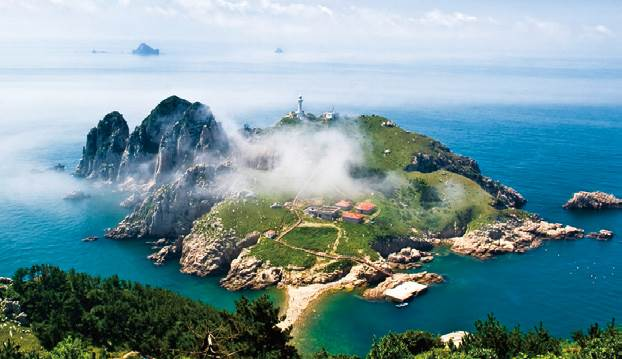
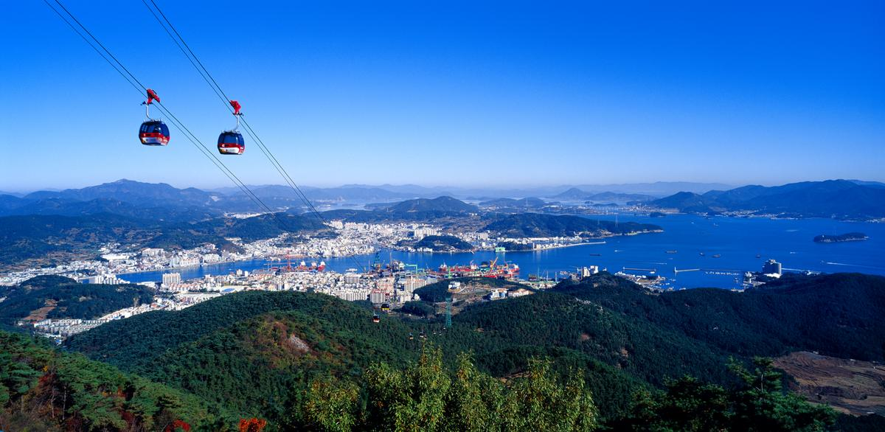

-
소매물도 등대섬
- 이 섬은 해양성 기후의 영향을 받아 초지가 발달하고
관목류의 식생이 섬 전체를 덮어 아름다운 초지경관을
형성하고 있으며, 해안 절벽 위에 서있는 백색 등대와
절묘한 조화를 이루어 이국적인 풍경을 연출하는 등 자연경관적·지질학적 가치가 뛰어나다.

통영 여행지 추천
통영 추천 여행지
통영관광지1

소매물도
통영관광지2
-
통영 케이블카
- 우리나라 100대 명산으로 지정된 해발 461m 미륵산 8부능선에 위치한
통영케이블카는 1,975m로서 관광용으로는 국내 최장의 길이를 자랑한다.
환경적인 데크를 이용해 일출과 일몰을 한 곳에서 즐길 수 있으며
보석 같은 섬들도 수놓아진 형언할 수 없는 쪽빛 바다의 장관도 느껴볼 수 있다.

케이블카
통영관광지3
-
동피랑
- 통영시 태평동과 동호동 경계언덕에 자리 잡은 한국의 몽마르트르 언덕이라 불리는
자그마한 마을 동피랑은 통영 서민들의 삶과 애환이 그대로 녹아 있는 달동네이다.